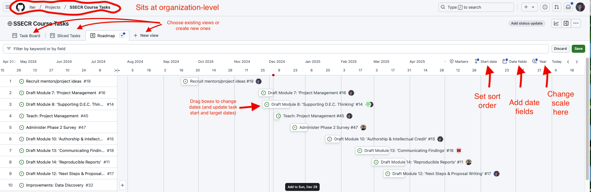

Managing Data & Projects
As your quest for relevant data continues, we’ll discuss how creating and maintaining a data inventory can be an effort that saves you heartache and greatly accelerates many of the technical facets of your project. After discussing data inventories, we’ll introduce some tenets of how you can manage the many tasks that make up your goal of ‘doing this project.’ This will help you more precisely handle and delegate tasks going forward.
Making a Data Inventory
As you find data, it will become necessary to–somehow–record what data your group has on hand. A data inventory is an extremely useful tool in this effort! A data inventory can take many forms but at its simplest, it should be a table where each dataset you find gets one row and critical information about that dataset is recorded in each column. It can be difficult to know which columns to include but keep in mind that it is always easiest to record information that you don’t wind up using than it is to go hunt through all of your datasets for some piece of information you didn’t record in the first place.
We’ve grouped some recommendations for useful data inventory components below into some loose categories but these are guidelines and your team likely will come up with useful additions–or may not need some of these pieces of information!
First and foremost, you’ll want to record where you found the data and where you can find it again if needed.
- What is the DOI or URL to the data?
- When did you last download or otherwise receive the data?
- What is the name of the data file when you originally downloaded it?1
- Is there a paper or report that may provide context that isn’t included in the official metadata? If so, what’s the link/citation info for that document?
- Sometimes a peer-reviewed paper’s Methods section might include valuable context that isn’t actually included in the data!
Tracking how you are allowed to use data is critical ethical data re-use.
- Who owns the data (a person, multiple people, or an institution)?
- What is the contact info for the data owner?
- Does the data have a license that specifies how you are allowed to use the data and how it should be cited?
- If the data were provided to you individually, or contributed by members of your group, what expectations do the dataset providers have?
- Is an acknowledgement sufficient or is co-authorship a condition of use?
- Are dataset providers comfortable with you publishing their raw data, or derived variables?
- Are there any other ‘co-owners’ of the data that should also be included beyond the person who provided you with the data?
- When working with unpublished data, we strongly encourage you to ask for and document permissions in writing (e.g., email) to avoid misunderstandings.
A data inventory can be useful for tracking variables you intend to use in your analysis. Consider not only the primary variable(s) of interest, but also what explanatory variables you might want to include in your analysis!
- What are the coordinates (i.e., latitude & longitude) of the data?
- Remember to enter these in decimal degrees if you want to use them in analysis!
- What country/state/county/locality is the data from?
- Include all of these that might vary across your datasets!
- What habitat or ecosystem is the data from?
- What’s the focal taxonomic group?
- What’s the taxonomic granularity?
- I.e., is there information about different species or only at a higher level?
- Are the data experimental or observational?
- If experimental, what treatments were applied? When? How frequently?
- What is the time range of the data?
- What is the temporal granularity of the data?
- Relatedly, what are the first and last years/time points in the data?
- How big was the study area/experimental plot?
One critical use of a data inventory that is often overlooked: are the data useful to your question?
If you found the data before, your later data searches will likely also turn it up even if it’s not useful! You can save other group members a headache by keeping datasets in your inventory table even if you end up concluding that a dataset is not useful to your project and noting the status appropriately, so it doesn’t need to be re-investigated the next time it surfaces in a search.
If a particular dataset is not useful, jot down a few notes on, why is it not useful? If your questions or in/exclusion criteria evolve, maybe it will become useful later!
If you start relying on a data inventory, it can become a valuable place to assign or delegate tasks within your group. This can also be helpful at the end of the project when you’re trying to remember who deserves credit for finding data/metadata. It can also be a helpful way to track progress and status of shared work. We will discuss more sophisticated methods for project management later, but to start with, consider adding columns to your data inventory to track:
- Who–in your group–is responsible for filling out the other columns for the dataset?
- I.e., whose ‘homework’ is it to flesh out this row of the data inventory?
- Who is responsible for double-checking the metadata entered by the first team member?
- Who is the primary point of contact with the original data owner/maintainer?
- What is the current status of the dataset?
- Consider adding categories that reflect your workflow at this time, e.g., “data found”, “metadata complete”, “not applicable”. You may add to this list as you outline and refine dataset-specific tasks in your workflow plan
Data Inventory Value
Documenting potential datasets (and their metadata) thoroughly in a data inventory provides numerous benefits! These include:
- A well-documented data inventory makes it easier for researchers to find and access specific data for reproducible research
- Documentation will help researchers to quickly understand the context, scope, and limitations of the data, reducing the time spent on preliminary data assessment
- Documentation ensures that any restrictions on data use are tracked to ensure proper crediting even as the project and team evolve
- Detailed documentation will speed up the data publication process (e.g., data provenance and differences among methods)
What is Project Management?
There are dozens of formal project management frameworks/approaches, most of which come out of industries (such as software development, construction, and manufacturing) that require teams of people to work together with efficiency and accountability. You’ve probably heard the names tossed around: Agile, Scrum, Lean Sigma Six, Kanban, etc. There are whole industries devoted to training project managers and developing apps to support them.
The trick, for scientific research projects, is to identify the approaches that also allow questions and goals to evolve along the way – and that don’t require a full-time project manager to implement. It’s easy to be seduced into thinking that the right system will keep your group organized. Hard-won experience tells us that the best system for your group is the one that requires the least adjustment to existing habits for the majority of group members.
| PM Element | Industry Outcome | Science Outcome |
|---|---|---|
| Break down tasks into manageable chunks | Delegation | Task articulation and distribution |
| Sequence of steps | Ensure needed resources/people tools are available when needed | Know which skills are needed when; know what form the output of each script/analysis needs to take |
| Identify dependencies | Avoid supply chain lags | Know what data you need and when you need them |
| Clarify responsibilities | Document productivity and responsibility | Avoid duplication of effort; keep the project moving; support authorship/credit agreements |
| Mitigate risk | Know when to abort or revise project goals | Assess threats to project success early and make a plan B |
How to Start
Like outlining a paper, there are a few basic steps to developing a solid project management plan. And it’s easy to think you can skip over the first steps because they seem so obvious. The trouble is, they may be obvious to each team member in different ways. Taking the time to make sure you all see them the same way can save worlds of headache down the road.
- Define the project
- Agree on the goal and the timeline
- If the timeline is determined externally (as for SSECR or for most grants), you’ll need to start with the timeline (possibly budget) and scope the project to fit the time and funds you have available.
- Develop a list of the steps needed to get from where you are to where you need to be.
- Place the steps in order and define the inputs and outputs of each step.
- Identify the people responsible for each step and an approximate timeline for its completion.
- Identify time points for check-in and re-evaluation
You could do all of this in a spreadsheet, but modern project management tools offer some benefits, especially alternative views of the same data and automated communication.
Beginning to Manage the Project
Once your team goals and the necessary steps are agreed on, it becomes much easier to build a project plan that clarifies the timeline and team member responsibilities. Especially with limited-term projects such as ours, a Gantt chart can be a particularly valuable way to map out project dependencies and responsibilities. With each task arranged on a timeline, spotting hidden dependencies and unrealistic workloads becomes much easier.
A robust support infrastructure exists for the project management profession – including formal training and a multitude of (often pricey) apps. But for the job of managing research collaborations, we’ve found that the single most important factor is whether your collaborators will use the system. For that to happen, they must have easy access to it, ideally without setting up a new account and as part of something they already do every day.
Anatomy of an issue
If you’re already working in GitHub or GitLab to collaborate on code, why not take advantage of GitHub’s project management capabilities? In GitHub, issues from your repos can be assigned to projects (which sit at a level above repos), allowing an overarching view of all the tasks associated with a project. Issues can also be created in the project itself.
Both kinds of issues can be assigned to individuals, marked with topical tags, and assigned start and due dates. Many non-coders are also able to access and make good use of Gitub Projects through the web interface, which allows them to comment, raise questions, and take on tasks in the same interface as coders.

Once once you have a few issues in your project, you’ll find that GitHub Projects (and many other project management tools) offer multiple views to help guide your work and decision-making.
The examples below draw from the repository we used to organize the first iteration of this course.
KanBan-style boards are often most intuitive, giving you a quick way to assess what is most urgent.

The “roadmap” view let’s you lay out your whole project with estimated start and end dates for various activities. It functions like an interactive Gantt chart, where issues can by dragged forward and back in time and the issue’s start or end date will adjust accordingly. The stack of issues can also be sorted by start date, target date, topic tags or assigned collaborator.


The “sliced tasks view” allows each collaborator to see their own assigned tasks, which is very helpful when you want to be sure you’re delivering on your commitments.

Another way to quickly access similar information is to filter the issues in your repository that are assigned to an individual.

Additional Resources
We’ve really only brushed the surface of project management today. You will each find tools and approaches that fit your work style. As you do, a few additional resources may be helpful.
Prep Work for Next Module
Footnotes
In the philosophy of “keep raw data raw” it is invaluable to keep an exact copy of the data as provided – including the author’s original filename – so you can trace back to a completely untouched original version if questions arise.↩︎